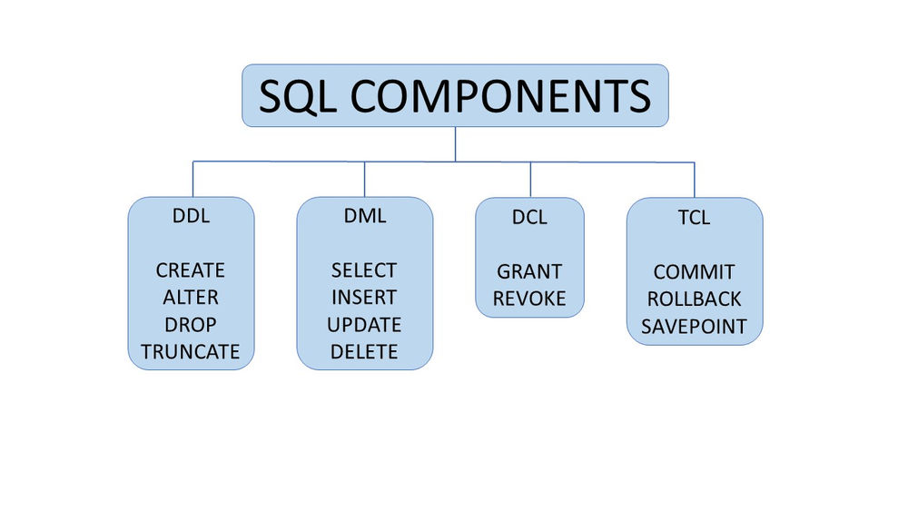
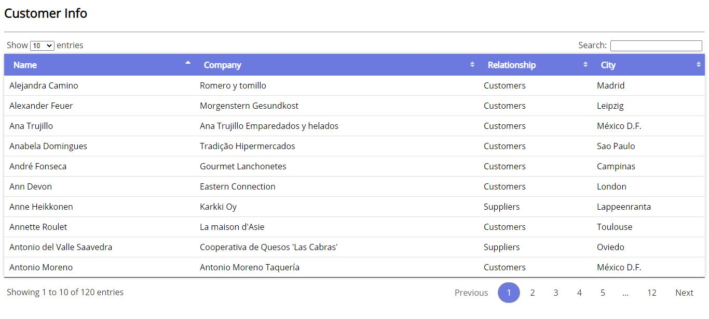
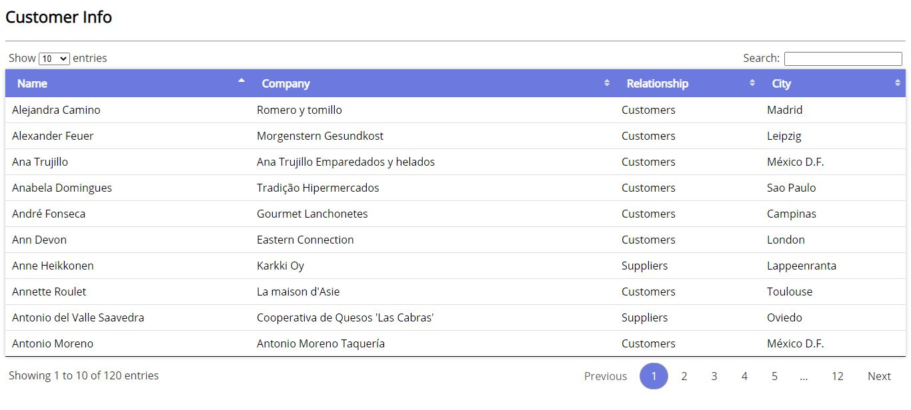

Database
DatabaseType of SQL Commands
- DDL: Data Definition Lenguage
- CREATE
- DROP
- ALTER
- TRUNCATE
- COMMENT
- RENAME
- DML: Data Manipulation Lenguage
- INSERT
- UPDATE
- DELETE
- LOCK
- DCL: Data Control Lenguage
- GRANT
- REVOKE
- TCL: Transaction Control Lenguage
- COMMIT
- ROLLBACK
- SAVEPOINT
- SET TRANSACTION
- DQL: Data Query Lenguage
- SELECT
Can be use to define the database squema this commands are use to create, modify and delete database structures
It deals with the manipulation of the data present in an specific database
This commands deal with the permissions fro the data in certain databases
Assings task to the database, starting with specific conditions, and ending up when the conditions set are met, allowing the transaction to be completed
Can be use to get the data out of the database and imposing a commant to it

 
